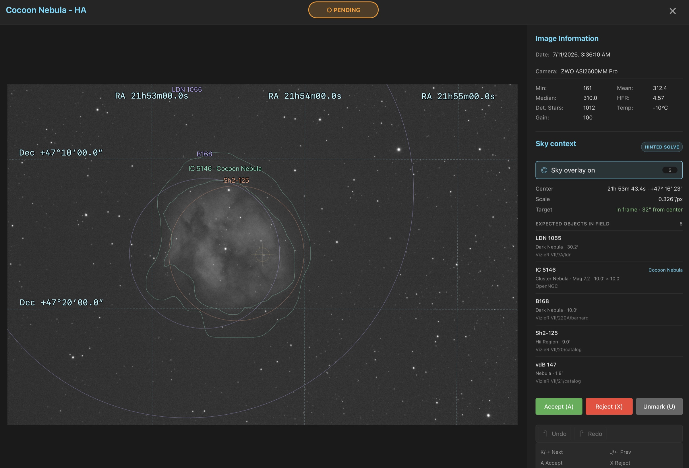
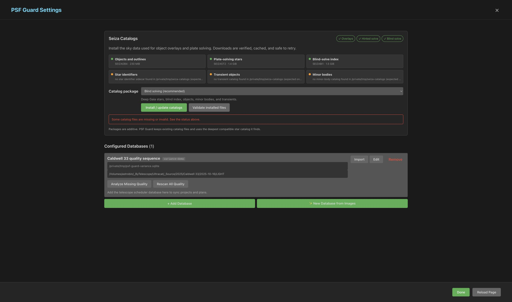

Sky Context & Plate Solving
Identify the objects expected around a frame, solve its pixels on demand with Seiza, and inspect catalog labels, object outlines, an RA/Dec grid, solved scale, and pointing offset without leaving the grader.

Context, solution, and overlay are different layers
| Layer | What it tells you | What it needs |
|---|---|---|
| Catalog context | Objects expected near the FITS or catalog target coordinates. This is pointing context, not proof that an object is visible in the pixels. | objects.bin and approximate coordinates |
| WCS solution | The image's measured center, scale, rotation, parity, and target offset. A supported embedded TAN WCS is accepted immediately; otherwise PSF Guard solves the pixels. | A star catalog, or a supported embedded WCS |
| Sky overlay | RA/Dec grid, target marker, labels, extents, and source-qualified catalog outlines projected into the image. | A WCS solution plus objects.bin for object annotations |
1. Install the Seiza catalogs
PSF Guard embeds Seiza 0.12.0's solver, but does not bundle its
multi-gigabyte catalogs. Open Settings → Seiza Catalogs in
the desktop app to install or update them. A browser gets the same controls
when the server starts with --allow-database-management.
Settings reports which features are ready, offers additive packages, keeps download progress across page reloads, and validates installed files. Blind solving is the recommended default.

For a manual or headless install, get the seiza CLI from the
Seiza releases, or
install the matching CLI with Cargo:
cargo install seiza-cli --version 0.12.0Then use either the guided setup or the non-interactive prebuilt download:
# Recommended: choose a bundle for your available storage and use case.
seiza setup
# Or download the complete, SHA-256-verified prebuilt bundle.
seiza download-data prebuilt --output /path/to/seiza-dataThe complete bundle includes every resource. If you install individual files, these three roles matter to PSF Guard:
| File | Feature |
|---|---|
objects.bin | Coordinate-only object context plus solved labels and catalog outlines |
stars-lite-tycho2.bin, stars-gaia.bin, or stars-deep-gaia17.bin | Hinted solving; Seiza selects the deepest installed catalog |
blind-gaia16.idx | Blind fallback when the pointing hint is absent or stale |
2. Let PSF Guard find the bundle
seiza setup writes to Seiza's platform-standard catalog
directory, which PSF Guard searches automatically. Restart PSF Guard after
installing or changing catalogs.
For a custom location, set SEIZA_CATALOG_DIR before starting
PSF Guard, or merge this top-level fragment into the existing PSF Guard JSON
registry:
"astrometry": {
"data_dir": "/path/to/seiza-data"
}Keep the registry's existing databases entries. The registry
lives here:
| Platform | Registry path |
|---|---|
| Windows | %APPDATA%\psf-guard\config.json |
| macOS | ~/Library/Application Support/psf-guard/config.json |
| Linux | ~/.config/psf-guard/config.json |
Docker
Mount the catalog directory read-only and expose its location to the embedded Seiza library:
docker run -d -p 3000:3000 \
-e SEIZA_CATALOG_DIR=/catalogs \
-v /path/to/seiza-data:/catalogs:ro \
-v /path/to/catalog.sqlite:/data/database.sqlite \
-v /path/to/images:/images:ro \
ghcr.io/theatrus/psf-guard:latest3. Verify the running setup
The capability endpoint reports every resolved path and which features are available. The validation endpoint deliberately opens and fully reads each configured catalog, so it can take time on the deep bundle:
curl http://localhost:3000/api/astrometry/capabilities
curl -X POST http://localhost:3000/api/astrometry/catalogs/validateobjects.bin, but no usable star catalog. A solver needs one of
the stars-*.bin files; the blind index is optional and only
provides fallback when the hint cannot solve the field.
4. Solve and inspect a frame
- Open an image in the detail grader. The Sky context panel loads header and catalog context without running a solve.
- If a supported WCS is embedded, use Sky overlay
immediately. Otherwise choose Solve field or press
O. - PSF Guard tries a hinted solve first (using FITS/mount position and scale), then the installed blind index if the hint is missing or stale.
- A successful solve enables the overlay automatically. Press
Oagain to toggle it while you zoom, pan, or grade. - With orbital elements cached, press
Tto draw satellites predicted to cross the solved sensor and align nearby trails in the FITS pixels.
The panel labels the result Embedded WCS, Hinted solve, or Blind solve, and shows the solved center, pixel scale, and whether the scheduled target is in frame.
Satellite projection adds the exposure time and observing site to that WCS. Dashed orbital paths and solid pixel-aligned paths remain separate. See Satellite Tracks for timing headers, offline elements, the evidence boundary, and grading behavior.
Solution cache and concurrency
Pixel-derived solutions are stored per database under
<cache>/<db-slug>/astrometry/<image-id>.json. They are reused
on later visits and invalidated when the source FITS file, relevant catalog,
or Seiza version changes. PSF Guard runs one memory-heavy solve per database
at a time; repeated requests for the same frame reuse the completed cache.
Image astrometry API
# Header/catalog context or a valid cached/embedded solution; never launches a solve.
curl http://localhost:3000/api/db/my-db/images/123/astrometry
# Decode pixels and solve on demand.
curl -X POST http://localhost:3000/api/db/my-db/images/123/astrometry